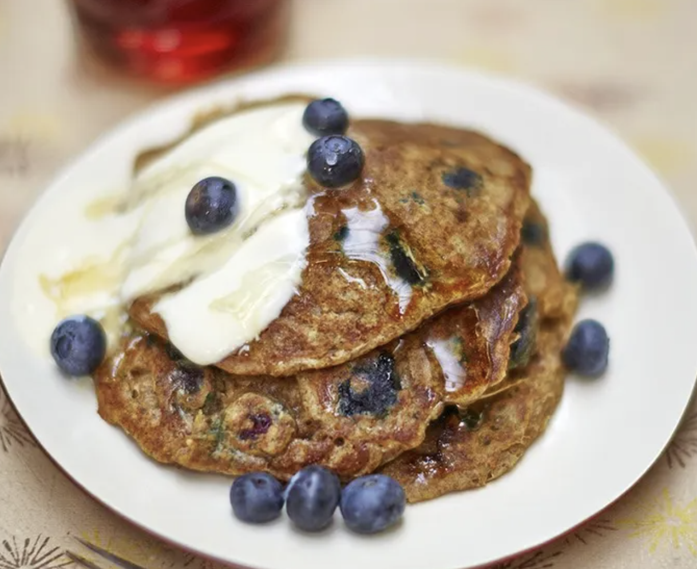

Vegan blueberry pancakes

A great type of breakfast pancakes, these vegan versions are the ultimate way to kick off the weekend
Total Time: Prep time: 10 mins | Cook time: 10 mins
Ingredients
- 1 tablespoon ground flaxseed
- 1 tablespoon coconut oil
- 250 ml unsweetened organic soya milk , or almond milk
- 1 teaspoon cider vinegar
- 125 g wholemeal flour
- 1 teaspoon golden caster sugar
- 1 teaspoon baking powder
- ¼ teaspoon bicarbonate of soda
- 1 pinch of sea salt
- 50 g blueberries , plus extra to serve
- vegetable oil
- organic soya yoghurt , to serve
- maple syrup , to serve
Method
- Whisk together the ground flaxseed and 2½ tablespoons of cold water, then set aside to thicken. Meanwhile, melt the coconut oil in a small pan over a medium heat, then leave to cool slightly.
- Combine the soya or almond milk and cider vinegar. Add the melted coconut oil, then whisk in the flaxseed mixture.
- Combine the flour, sugar, baking powder, bicarbonate of soda and salt, then make a well in the middle. Gradually pour in the wet mixture, stirring continuously until combined – don’t worry if there are still a few lumps. Fold in the blueberries, then set aside.
- Preheat the oven to its lowest temperature. Heat a splash of vegetable oil in a large frying pan over a medium heat. Add a ladleful of the batter to the pan (one ladleful is enough for one pancake), then add more ladlefuls of the batter, ensuring they’re nicely spaced out – you’ll need to do this in batches.
- Cook for around 2 minutes, or until golden underneath and little bubbles start to appear on the surface, then use a palette knife to flip them over. Cook for a further 2 minutes, or until golden. Place in the oven to keep warm while you make the remaining pancakes.
- Serve with a dollop of soya yoghurt, a drizzle of maple syrup and extra blueberries, if you like.
Bojack Horseman
i love pancakes